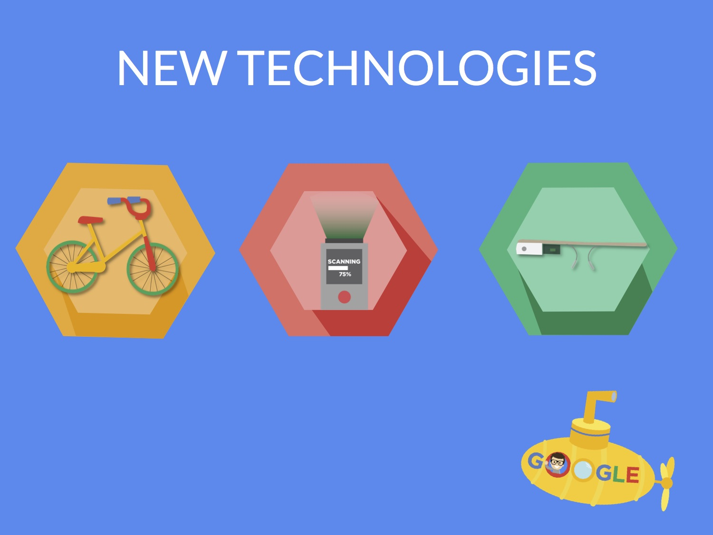

Googlantis
At the UC Berkeley Google Designathon hosted by the Berkeley Design Council in partnership with Google, we were tasked with designing a city’s infrastructure built to defend against a zombie apocalypse in 8 hours. Our team placed 2nd overall, won “Best Design”, and the “Audience Choice Award” out of 15+ teams, moving onto to present to the Google Plus design team at Google Headquarters in Mountain View, CA.
The Proposal
We approached on design using Maslow's Hierachy of human needs. Survival is at the bottom with fulfillment at the top of the pyramid. In this scenario, sustaining life was our MVP. We built systems that accounted for the fact that zombies cannot swim and that there needed to be a clear strategy of containment to mitagate zombie disease outbreak. Our solution was an under-water society with connected pods built to reflect on-land neighborhoods and quaratined evacation pods for the infected.
Post-MVP
As we examined that rebuilding society after a disease outbreak required more than just fufilling survival needs, we wanted to design solution to an apocalypse that would improve the design we put in place for survival as well as transform life for this new underwater community. Looking at a human's higher level needs, we decided that commerce would first need to be introduced to meet demands for survival goods--food, clothing. We placed commerce buildings at the town center Then, to transform life underwater, we would introduce new technologies such as bikes to commute from pod to pod and allow our society to organically form connections in the town center.
